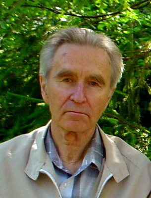
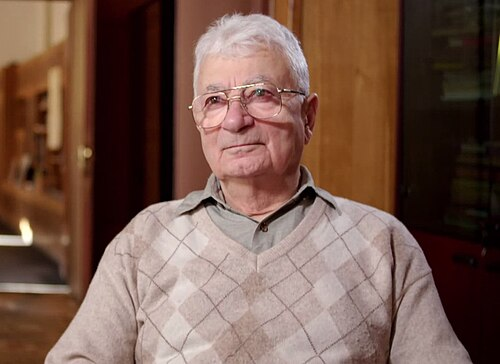
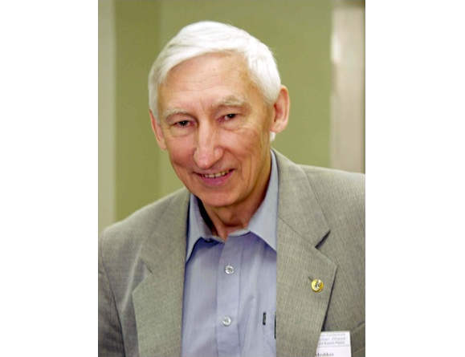
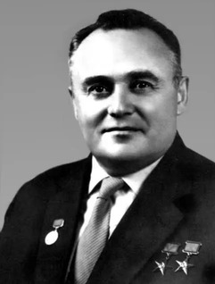

ИССЛЕДОВАТЕЛИ
Ученые Московской области
Здесь представлены ученые и исследователи, связанные с развитием науки нашего региона.

(1930 — 2016)
Сразу после окончания МИФИ в 1953 году он приехал работать в Дубну В Дубне он стал доктором физико-математических наук, получил звание «Почетный сотрудник ОИЯИ». За проведенные исследования процессов ядерной физики он был удостоен Государственной премии СССР
Юрий Константинович Акимов
Экспериментальной ядерной физика и физика элементарных частиц

Специалист в области экспериментальной ядерной физики, академик РАН (2003), научный руководитель Лаборатории ядерных реакций им. Г. Н. Флёрова в Объединённом институте ядерных исследований в Дубне, заведующий кафедрой ядерной физики университета «Дубна».
Оганесян Юрий Цолакович
Экспериментальная ядерная физика.

С 1993 года и по настоящее время он работает в ОИЯИ, где внес фундаментальный вклад в меганауку. За свои научные и организационные заслуги ученый удостоен почетного звания «Заслуженный деятель науки и техники Московской области».
Мешков Игорь Николаевич
Физика, специализируется на физике ускорителей, физике пучков заряженных частиц и плазмы

( 1906 — 1966 )
Сергея Павловича Королёва с Московской областью носит фундаментальный характер: здесь располагались главные предприятия его жизни, формировался фундамент советской космонавтики, а один из крупнейших городов региона сегодня носит его имя
Сергей Павлович Королёв
Космическая техника, ракетно-космические системы